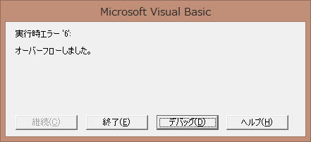

よくあるVBA実行時エラーの解説と対応
VBAを書き終えて、いざ実行したら意味不明なメッセージが・・・
ここでは初心者向けに、代表的な実行時エラーの解説とその対応について説明します。
データ型のエラー
型が一致しません。：実行時エラー13
Dim i As Long
i = "A"
単純は例としては、このような状況です。
Longに対し文字列を入れているのでエラーとなります。
違うデータ型であっても、自動変換可能なものはエラーとならず、データ変換されます。
i = 1.2
であれば、iには1が入ります。
もう少し複雑なコードの時に、どこがエラーなのかが直ぐには分からない場合があります。
Dim i As Long
For i = 1 To 10
Cells(i, 3) = Cells(i, Cells(i, 1)) / Cells(i, 2)
Next
もし、こんなコードで、型が一致しませんとなったら、どこが悪いのかは直ぐには分からないでしょう。
A列、B列に数値以外が入っていても発生しますし、A列の数値が5なら、E列が文字でもこのエラーになります。
エラーで止まった時点で、iの値を確認し、
当該行のデータを確認するか、イミディエイトウィンドウで、一つづつ確認するしかありません。
イミディエイトで値の確認
計算時のエラー
オーバーフローしました。：実行時エラー6

0 で除算しました。：実行時エラー11
Longに30億とか入れればオーバーフローしますが、実務的にはあまり無いと思います。
※Longは、-2,147,483,648 ～ 2,147,483,647
むしろ、0÷0の時に、このオーバーフローになります。
Dim i As Long
For i = 1 To 10
Cells(i, 3) = Cells(i, 1) / Cells(i, 2)
Next
このような場合に、
分子分母ともに0の時は、オーバーフロー
分母のみ0の時は、0除算となります。
インデックスのエラー
インデックスが有効範囲にありません。：実行時エラー9
配列を使っている場合は勿論発生しますし、配列を使う人は承知しているはずです。
むしろ、配列など知らない・使っていないのに・・・
そのような場合に、何が悪いのか悩んでいることが多いように感じます。
このような場合の多くは、シート名が間違っているだけの事が多いです。
Worksheets("Sheet1").Select
Sheet1が存在しなければ、インデックスのエラーとなります。
オブジェクトの設定エラー
オブジェクト変数または With ブロック変数が設定されていません。：実行時エラー91
Dim ws As Worksheet
With ws
.Cells(1, 1) = 1
End With
Dim ws As Worksheet
ws.Cells(1, 1) = 1
単純な例としては、このようなものになります。
オブジェクト変数に何も割り当てられていないことによるエラーです。
この場合は、エラー停止した行のオブジェクト変数の中身を確認します。
上記のVBAであれば、wsに何も設定していない為にエラーとなっています。
メソッド・プロパティのエラー
メソッドまたはデータ メンバが見つかりません。：コンパイル エラー
オブジェクトは、このプロパティまたはメソッドをサポートしていません。：実行時エラー438
前者は、記述としてはメソッドになります。
後者は、メソッド・プロパティどちらでも発生しうるエラーです。
Dim ws As Worksheet
Set ws = ActiveSheet
ws.Calculata
Cells(1, 1).Font.Siza = 14
どちらにしても、単純にスペルミスという事ですので、しっかりと確認すればわかるはずです。
そもそも、入力候補が出るように記述を進めることが肝心です。
インテリセンス（入力支援、入力候補）から選択するようにすれば、このエラーはほとんど出なくなるはずです。
入力するプロパティのスペルに自信が無ければ、
Cellsだけ、もしくはCells()と引数を省略して、.を入力すれば、
ただし、後から引数を入れ忘れないようにしてください。
引数のエラー
名前付き引数が見つかりません。コンパイル エラー
引数は省略できません。コンパイル エラー
引数の数が一致していません。または不正なプロパティを指定しています。コンパイル エラー
MsgBox Prompy:="タイトル"
PromptがPrompyになっています。
MsgBox
省略できない必須の引数が指定されていません。
MsgBox 1, 2, 3, 4, 5, 6
MsgBoxの引数は全部で5つです。
関数・メソッドでは、インテリセンス（入力支援、入力候補）が出るので、しっかりと見ながら入力してください。
表示されているものをよく見ながら入力すれば、このような事にはなることは避けることができます。
実行時エラー関連記事
同じテーマ「マクロVBA技術解説」の記事
フォルダー・ファイル・ブック・シートの文字制限
Excel2013におけるScreenUpdatingの問題点
Dir関数の制限について
よくあるVBA実行時エラーの解説と対応
Application.Goto使用時の注意
ScreenUpdating=False時にエラー停止後にシートが固まったら
標準スタイル違いの問題点：標準フォント複写、列幅をピクセルで合わせる
VBAでエラー行位置（行番号）を取得できるErl関数
WorksheetFunction.Matchで配列を指定した場合の制限について
VBAでシート関数使用時の配列要素数制限
新着記事NEW ・・・新着記事一覧を見る
VBA100本ノック 100本目：WEBから100本ノックのリストを取得｜VBA練習問題（3月3日）
VBA100本ノック 99本目：自動席替え（行列と前後左右が全て違うように）｜VBA練習問題（3月2日）
VBA100本ノック 98本目：席替えルールが守られているか確認｜VBA練習問題（3月1日）
VBA100本ノック 97本目：Accessデータを取得（グループ集計）｜VBA練習問題（2月27日）
VBA100本ノック 96本目：Accessデータを取得（マスタ結合&抽出）｜VBA練習問題（2月26日）
VBA100本ノック 95本目：図形のテキストを検索するフォーム作成｜VBA練習問題（2月24日）
VBA100本ノック 94本目：表範囲からHTMLのtableタグを作成｜VBA練習問題（2月23日）
VBA100本ノック 93本目：複数ブックを連結して再分割｜VBA練習問題（2月22日）
VBA100本ノック 92本目：セルの色を16進で返す関数｜VBA練習問題（2月20日）
VBA100本ノック 91本目：時間計算（残業時間の月間合計）｜VBA練習問題（2月19日）
アクセスランキング ・・・ ランキング一覧を見る
1.最終行の取得（End,Rows.Count）｜VBA入門
2.RangeとCellsの使い方｜VBA入門
3.変数宣言のDimとデータ型｜VBA入門
4.マクロって何？VBAって何？｜VBA入門
5.Range以外の指定方法（Cells,Rows,Columns）｜VBA入門
6.セルのコピー&値の貼り付け（PasteSpecial）｜VBA入門
7.繰り返し処理（For Next)｜VBA入門
8.セルに文字を入れるとは（Range,Value）｜VBA入門
9.マクロはどこに書くの（VBEの起動）｜VBA入門
10.とにかく書いてみよう（Sub,End Sub）｜VBA入門
- ホーム
- マクロVBA応用編
- マクロVBA技術解説
- よくあるVBA実行時エラーの解説と対応
このサイトがお役に立ちましたら「シェア」「Bookmark」をお願いいたします。
記述には細心の注意をしたつもりですが、
間違いやご指摘がありましたら、「お問い合わせ」からお知らせいただけると幸いです。
掲載のVBAコードは動作を保証するものではなく、あくまでVBA学習のサンプルとして掲載しています。
掲載のVBAコードは自己責任でご使用ください。万一データ破損等の損害が発生しても責任は負いません。